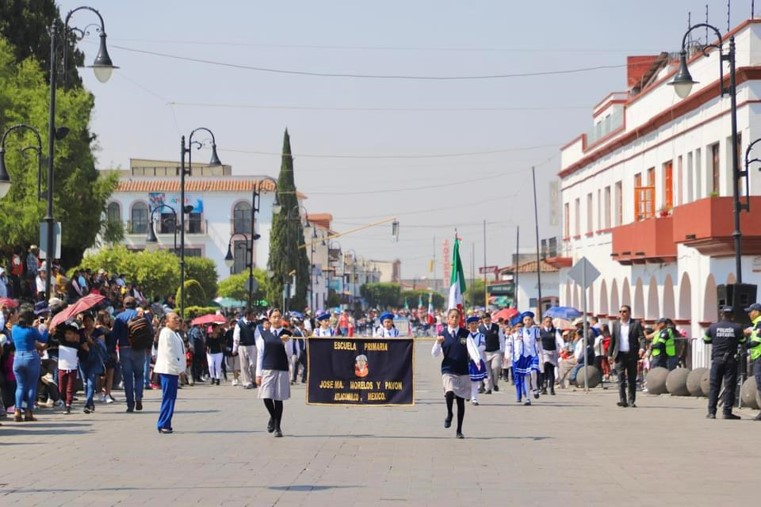
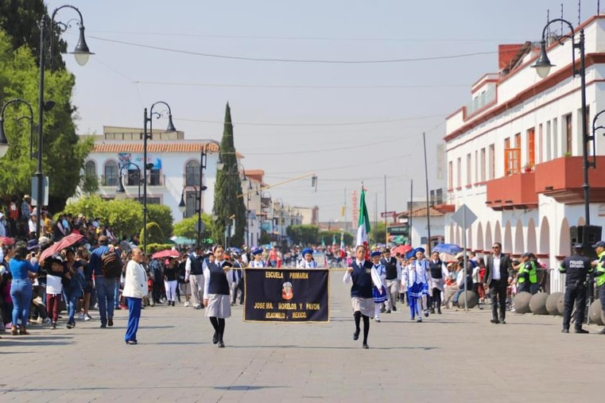

Fomentamos el respeto y la convivencia a través de programas educativos y de civismo.
El departamento de Educación y Civismo del Ayuntamiento se encarga de organizar actividades, programas y recursos educativos para fomentar el civismo y la responsabilidad ciudadana entre nuestros vecinos. En 2024, nuestro objetivo es fortalecer la formación integral de la comunidad, promoviendo valores de respeto, tolerancia y participación activa en la vida pública. A través de talleres, conferencias y eventos culturales, buscamos no solo informar, sino también involucrar a la ciudadanía en acciones que mejoren su entorno. Creemos que una educación sólida es la base para una sociedad justa y equitativa, por lo que trabajamos en colaboración con instituciones educativas y organizaciones locales para desarrollar iniciativas que respondan a las necesidades y desafíos actuales.
 



La misión de Educación y Civismo Atlacomulco es promover la participación activa de los ciudadanos y fomentar valores cívicos en la comunidad. Nos enfocamos en crear un entorno donde la ciudadanía esté informada y comprometida con el bienestar común, a través de la educación y la formación de hábitos de convivencia.
La visión de Educación y Civismo Atlacomulco 2024 es ser un referente en la promoción de la educación cívica y el respeto en la sociedad. Aspiramos a ser un modelo de participación ciudadana, donde cada individuo reconozca su papel en la construcción de una comunidad más justa y equitativa.


Email: coordinacion.educacion@atlacomulco.gob.mx
Teléfono: 712 122 5920
Dirección: Av. José María Morelos y Pavón, No 06, Col. Centro